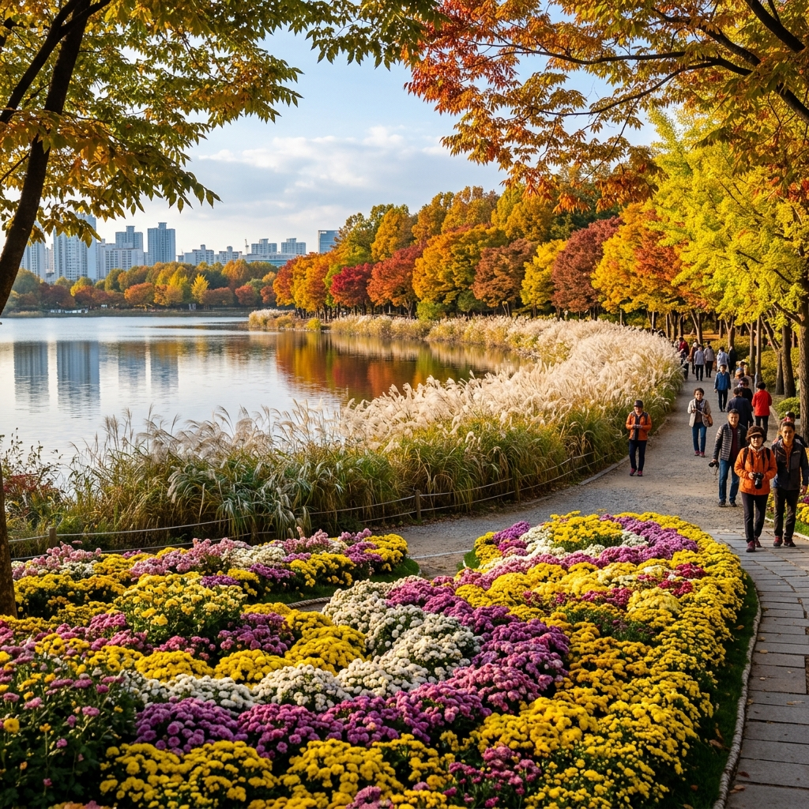

고양·파주 10월 국화 축제와 일산 호수공원 억새밭 — 대표 1장 + 비주얼 인포그래픽
가을의 절정을 알리는 진한 국화 향기와 은빛 억새의 물결을 만끽하는 수도권 당일치기 나들이입니다.
10월 중순 고양 일산 호수공원은 형형색색의 가을 국화 분재와 조형물이 가득한 야외 꽃 전시, 그리고 호숫가를 따라 바람에 흔들리는 은빛 억새밭이 어우러져 장관을 이룹니다. 입장료 부담 없이 누구나 자유롭게 거닐 수 있는 무료 명소로, 인근 파주의 가을 명소와 함께 묶어 둘러보기 좋습니다. 호수공원 내 4곳의 공영주차장 요금과 혼잡 회피 방법까지 정리했습니다.

일산 호수공원 주제광장에 화려하게 펼쳐진 10월 가을 국화 전시와 억새 산책로 / AI 제작 이미지
01 | 수도권 가을 정취의 중심, 일산 호수공원 가을 풍경
동양 최대 규모의 인공 호수를 자랑하는 고양시 일산 호수공원(총면적 103만 4,000㎡)은 수도권 시민들에게 가장 친숙하면서도 언제 찾아도 아름다운 휴식처입니다.
봄의 벚꽃과 튤립에 이어 가을이 찾아오면 호수 둘레 4.7km를 감싸고 있는 메타세쿼이아, 은행나무, 단풍나무들이 일제히 짙은 가을빛으로 물듭니다.
잔잔한 호수 수면 위로 파란 하늘과 알록달록한 단풍이 투영되는 모습은 마치 한 폭의 수채화를 감상하는 듯한 평온함을 선사합니다.
넓은 평지 지형으로 이루어져 있어 유모차나 휠체어를 동반한 가족 나들이는 물론, 가벼운 산책과 피크닉을 즐기기에 더없이 최적화된 공간입니다.
02 | 10월 일산 호수공원 국화 전시와 가을꽃 테마정원
매년 10월이면 일산 호수공원 내 고양꽃전시관 광장과 한울광장 일대에서는 가을 국화 및 가을꽃 야외 전시가 풍성하게 펼쳐집니다.
노란색, 자주색, 순백색의 대국(大菊)과 소국 수만 본이 모여 거대한 꽃 터널과 동물 모양의 토피어리, 탑 모양의 분재 조형물을 형성합니다.
전시 공간에 들어서는 순간 은은하고 깊은 국화 향기가 바람을 타고 번져와 후각을 기분 좋게 자극합니다.
별도의 입장료 없이 누구나 무료로 자유롭게 관람하고 사진을 찍을 수 있어, 가을 주말이면 알록달록한 꽃밭을 배경으로 추억을 남기려는 나들이객들의 발길이 끊이지 않습니다.
03 | 전통정원과 달맞이섬 은빛 억새·갈대 산책로
꽃 전시장을 지나 호수 안쪽으로 발걸음을 옮기면 고즈넉한 한국 전통정원과 달맞이섬(월파정) 주변으로 은빛 억새 군락이 펼쳐집니다.
호숫가 수변 데크길을 따라 키 높이만큼 자란 은빛 억새와 갈대가 가을바람에 서걱거리며 춤을 추는 소리는 도심의 소음을 완전히 잊게 만듭니다.
특히 해 질 녘인 오후 5시 무렵에 방문하면 황금빛으로 물드는 가을 노을이 억새 이삭 사이로 쏟아져 내려 환상적인 역광 사진을 담을 수 있습니다.
코스 A · 약 40분
🌼 가을 국화 & 꽃전시 코스
제2주차장 → 고양꽃전시관 광장 → 주제광장 꽃터널 → 한울광장
포인트: 다채로운 국화 분재와 가을꽃 포토존 중심 (가족·연인 추천)
코스 B · 약 50분
🌾 은빛 억새 & 노을 산책로
전통정원 → 달맞이섬(월파정) → 수변 데크길 억새 군락
포인트: 16:30~17:30 골든아워 황금빛 역광 인생샷 명당
코스 C · 약 25분
🚲 호수 4.7km 단풍 라이딩
자전거 전용도로 완비 (보행로 완전 분리)
포인트: 메타세쿼이아길 & 단풍나무 가로수길 시원한 가을바람
💡 관람 팁: 꽃전시관 광장에서 국화 향기를 맡은 후, 오후 4시 이후 달맞이섬 억새길로 이동하면 최상의 조명을 만날 수 있습니다.
04 | 파주 벽초지수목원 & 율곡이이유적지 연계 국화 명소
고양 일산 호수공원을 둘러본 후 시간 여유가 있다면 인근 파주의 가을 명소로 코스를 확장해보세요.
• 파주 벽초지수목원: 동서양의 정원이 조화를 이루는 명소로, 10월에는 유럽식 신화의 정원과 동양 정원 곳곳에 수백만 송이의 가을 국화가 만발합니다. 화려한 분수와 조각상, 가을 단풍이 어우러져 이국적인 인생샷을 남길 수 있습니다.
• 파주 율곡이이유적지 (자운서원): 율곡 이이 선생의 학덕을 기리는 곳으로, 서원 입구에 수령 수백 년 된 거대한 은행나무 거목들이 황금빛 비를 뿌리는 가을 대표 출사지입니다. 서원 주변 잔디밭에는 가을 야생화와 국화가 함께 피어납니다.
• 임진각 평화누리공원: 드넓은 잔디 언덕에 수천 개의 바람개비가 돌아가는 명소로, 시원한 가을바람을 맞으며 연날리기와 산책을 즐기기에 훌륭합니다.
05 | 일산 호수공원 주차장 4곳 위치와 요금·진입 팁
일산 호수공원은 공원 외곽을 따라 총 4개의 공영주차장(제1~제4주차장)이 마련되어 있습니다.
목적지에 따라 가까운 주차장을 선택해야 불필요한 보행 시간을 줄일 수 있습니다.
| 주차장 명칭 |
인접 명소 및 추천 목적 |
주차 면수 |
주차 요금 |
| 제1주차장 (남쪽) |
자연학습장, 전통정원, 남측 피크닉장 |
약 250면 |
최초 30분 500원, 초과 10분당 100원 (1시간 800원) |
| 제2주차장 (동쪽) |
고양꽃전시관, 주제광장 (국화전시 최인접) |
약 350면 |
10분당 80원 (1시간 480원) |
| 제3주차장 (북동) |
한울광장, 노래하는 분수대 방면 |
약 800면 (가장 넓음) |
10분당 80원 (1시간 480원) |
| 제4주차장 (북쪽) |
노래하는 분수대, 킨텍스 방향 |
약 580면 |
10분당 80원 (1시간 480원) |
📊 일산 호수공원 나들이 핵심 이용 정보 한눈에 보기
방문 전 꼭 확인해야 할 주요 이용 요금 및 운영 기준 요약표입니다.
🎟️
공원 및 국화전시 입장료
전구역 무료
연중무휴 상시 개방
🅿️
공영주차장 요금 (제2~4)
1시간 480원
3시간 주차 시 1,440원
⏰
억새 포토존 골든타임
16:30 ~ 17:30
달맞이섬 수변 노을
🚲
순환 둘레길 거리
4.7 km
자전거 25분 / 도보 80분
06 | 호수공원 자전거 대여 요금과 둘레길 라이딩 코스
일산 호수공원의 진면목을 제대로 즐기는 또 다른 방법은 자전거 라이딩입니다.
공원 내부에는 보행자 전용 산책로와 자전거 전용도로가 완벽하게 분리되어 있어 안전하고 쾌적하게 페달을 밟을 수 있습니다.
공원 진입로와 정발산역, 마두역 인근에는 고양시 공공자전거 및 민간 공유 자전거가 넉넉히 비치되어 있습니다.
공원 둘레를 따라 도는 4.7km 순환 코스는 평지 직선 구간이 많아 약 25분이면 여유롭게 한 바퀴를 완주할 수 있습니다.
07 | 라페스타 & 웨스턴돔 맛집거리 점심 식사 추천
공원 제2·제3주차장 맞은편으로 길을 건너면 일산의 대표 상업지구인 웨스턴돔과 라페스타가 바로 연결됩니다.
도보로 5~10분 거리에 수많은 맛집과 카페가 밀집해 있어 점심 식사 장소를 고민할 필요가 없습니다.
• 일산 칼국수: 진한 닭 육수에 바지락이 듬뿍 들어간 칼국수로 쌀쌀한 가을에 최고의 인기를 누립니다.
• 웨스턴돔 브런치 & 베이커리: 트렌디한 인테리어의 파스타, 화덕 피자, 수제버거 맛집들이 즐비합니다.
• 라페스타 먹자골목: 찌개, 고기구이, 해물 요리 등 가성비 뛰어난 다양한 식사 메뉴를 취향대로 골라 즐길 수 있습니다.
08 | 가을 호수공원 피크닉 준비물과 돗자리 명당
10월의 맑은 가을날, 일산 호수공원 잔디밭에서 즐기는 피크닉은 잊지 못할 추억을 만들어줍니다.
🧺 호수공원 가을 피크닉 팁 & 추천 스팟
1. 피크닉 명당: 제1주차장 인근 잔디광장 및 달맞이섬 맞은편 느티나무 그늘 아래 잔디밭
2. 필수 준비물: 방수 피크닉 매트(돗자리), 얇은 무릎담요(바람막이용), 보온병에 담긴 따뜻한 차
3. 주의 사항: 공원 내 텐트 및 그늘막 설치는 엄격히 금지(과태료 부과 대상), 돗자리만 허용
4. 환경 보호: 발생한 쓰레기는 반드시 되가져가거나 분리수거장에 지정 배출
5. 반려견 동반: 목줄 착용 및 배변봉투 지참 시 동반 산책 가능 (전시 구역 진입 시 주의)
09 | 고양·파주 당일치기 가을 힐링 나들이 코스 일정표
수도권에서 출발해 하루 만에 가을의 꽃과 억새를 완벽하게 즐기는 추천 동선입니다.
| 시간대 |
방문 장소 및 코스 |
주요 일정 내용 |
| 10:00 ~ 12:00 |
일산 호수공원 꽃전시관 광장 |
가을 국화 야외 전시 관람 및 분재 포토존 사진 촬영 |
| 12:00 ~ 13:30 |
웨스턴돔 / 라페스타 |
도보 5분 거리 맛집가에서 점심 식사 및 카페 휴식 |
| 13:30 ~ 15:30 |
호수 둘레길 & 달맞이섬 |
은빛 억새밭 산책 또는 4.7km 자전거 라이딩 |
| 16:00 ~ 18:00 |
파주 율곡이이유적지 (자운서원) |
수령 수백 년 은행나무 거목 단풍 관람 및 귀가 |
💡 호수공원 가을 나들이 최종 요약 한 줄 팁
주말 방문 시 오전 11시 이전에 도착해야 제2주차장에 안전하게 주차할 수 있습니다. 만차 시 제3주차장으로 진입하세요!
#일산호수공원
#고양가을국화축제
#10월가볼만한곳
#일산호수공원억새
#일산호수공원주차장
#호수공원피크닉
#가을당일치기여행
#달맞이섬월파정
#수도권단풍명소
#파주가을명소